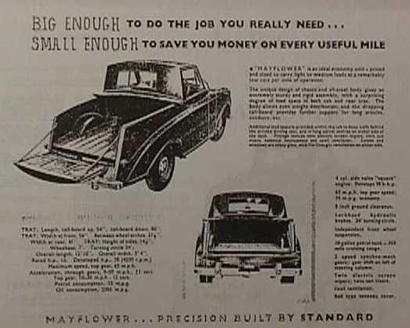

History of the Triumph Mayflower
Launch
The Triumph Mayflower was unveiled at the 1949 British International Motor Show at Earl’s Court amidst great media acclaim. However, deliveries did not commence until the middle of 1950.
The Mayflower did not find a ready market, and sales did not meet Standard’s expectations. When Sir John Black (Standard’s marketing director) unveiled the Mayflower, he had great ambitions for the car. He reckoned ‘luxurious’ no longer had to mean large, so this premium small car should, he thought, prove popular with American buyers as well as British. Unfortunately, by the time the Mayflower arrived, car makers in the US were producing much bigger cars at affordable prices, resulting in only 510 Mayflowers being sold in North America. Around 34,000 were made in the four-year production run, with around 16,400 being sold in the UK; the rest being sold mostly to commonwealth countries such as Australia and New Zealand. It would, however, be easy to assume that many more Mayflowers were built than the figure quoted – at classic car shows, a surprising number of people claim to have learnt to drive in a Mayflower, or that it was their parents’ first car.
Specification
The Triumph Mayflower was a four-seater family car powered by a 1247 cc side-valve engine through a three-speed, column-change gearbox. It had ‘Razor Edge’ styling, like its big brother the Renown, mimicking the style of the Rolls Royce of the period (hence its nicknames: the “poor man’s Rolls Royce”, or the “baby Rolls Royce”). It is thought that Sir John Black styled the car to appeal to the American market, with the name ‘Mayflower’ being chosen for this reason. Even the bonnet catch was designed with an integral emblem of the ship of the same name; a reference to the ‘Pilgrim Fathers’.
The engine is a modified version of that fitted to the Standard Ten and boasted an aluminium cylinder head. With the single Solex carburettor, it created 38 bhp.
The gearbox came from the Standard Vanguard, having synchromesh on all forward gears.
Independent suspension was fitted at the front using coil springs and telescopic dampers, whereas the rear suspension was by semi-elliptic leaf springs on a solid rear axle; again, based on the Vanguard's design.
Lockheed hydraulic brakes were fitted all round, with a ‘pull’ handbrake on the right of the driver (RHD models) under the dashboard.
The body was designed at ‘Mulliners of Birmingham’, by chief designer Leslie Moore, with input from Walter Belgrove of Standard. The body shells were built by ‘Fisher and Ludlow’ at Castle Bromwich, Birmingham.
It was the first car to be manufactured – by either Standard or Triumph – with ‘unitary construction’ (i.e. consisting of an integral chassis and body, rather than a body bolted onto a separate chassis).
Performance
The Mayflower’s performance was never startling: when tested by a British motoring magazine, ‘The Motor’, in 1950, it was found to have a top speed of 62.9 mph; taking just over 26 seconds to accelerate from 0-50 mph. It returned fuel consumption figures of 28.3 miles per gallon, although experienced drivers have found that with care this can be increased. Despite these underwhelming figures, the car was still afforded favourable reviews in the motoring press at the time.
During the Mayflower’s short production life, there were very few modifications: a rebound cable was added to the lower wishbone to help prevent roll; push-button handles were introduced shortly after launch, and a larger 3.5 kW heater replaced the 2 kW one that had previously been offered.
Options

A new Mayflower was available with only a few ‘optional extras’: a heater, a radio, and a choice of either leather seats or, for £5 less, the relatively new ‘Vynalide’ (which sold in the UK for £473.10s.7d).
A few variants were produced, including ten ‘drophead coupés’ which were built in 1950.
The ‘Standard Motor Company’ in Australia produced a coupé utility variant of the Mayflower at their Port Melbourne plant in Victoria. 150 examples were built, from Mayflower Saloon CKD (‘knock-down’) kits imported from the United Kingdom (with bodywork being modified locally to form a rear-load area, to which a timber floor and side panels were added).
The Mayflower was replaced by the Standard Eight in 1953, but the next small Triumph launch would not be until 1959, when the Triumph Herald was produced.
Sources
This article is an amalgamation of information from various sources including: